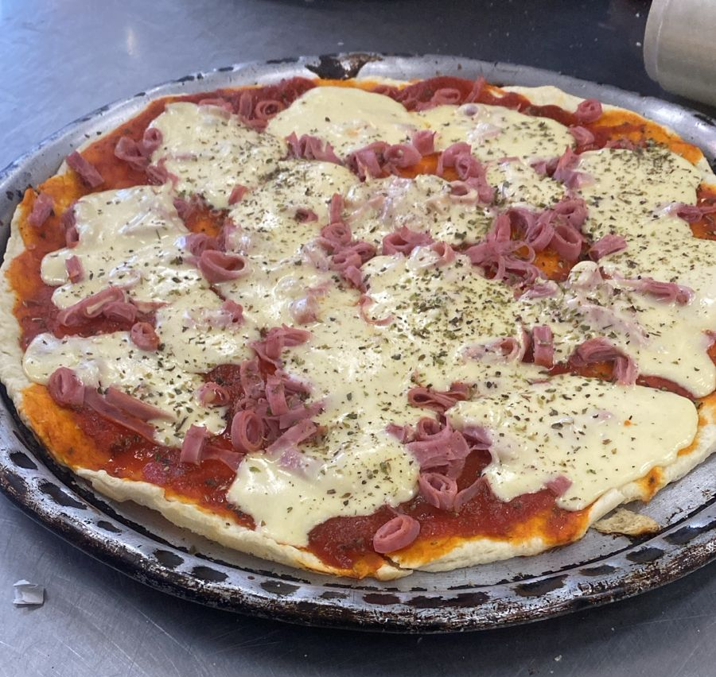

En este proyecto los estudiantes elaboraron prepizzas de manera artesanal, aplicando técnicas de panificación como el preparado del fermento, amasado, leudado y precocción. El trabajo permitió conocer cada etapa necesaria para obtener una masa de excelente calidad, lista para ser cubierta con los ingredientes deseados.
Colocar 500 gramos de harina 000 en un bol. En el centro agregar 25 gramos de levadura fresca (o un sobre de levadura seca), una pizca de azúcar y un poco de agua. Mezclar apenas y dejar reposar durante aproximadamente 15 minutos para formar el fermento.
Agregar una cucharada de sal por los bordes, cinco cucharadas de aceite y el agua necesaria hasta formar una masa homogénea. Llevar la masa a la mesada y amasar hasta obtener un bollo liso y elástico. Tapar y dejar leudar hasta que duplique su volumen.
Aceitar dos placas. Con esta preparación pueden elaborarse dos prepizzas grandes o bien estirar la masa y cortar pizzetas individuales. Colocar la masa sobre las placas, cubrir con salsa de tomate y cocinar en horno precalentado durante 8 a 10 minutos. Una vez precocidas estarán listas para agregar los ingredientes preferidos y finalizar la cocción.
Esta actividad permitió que los estudiantes incorporaran conocimientos sobre panificación, desarrollando habilidades prácticas, trabajo en equipo y buenas prácticas de manipulación de alimentos, demostrando que es posible elaborar productos de calidad mediante procesos artesanales.